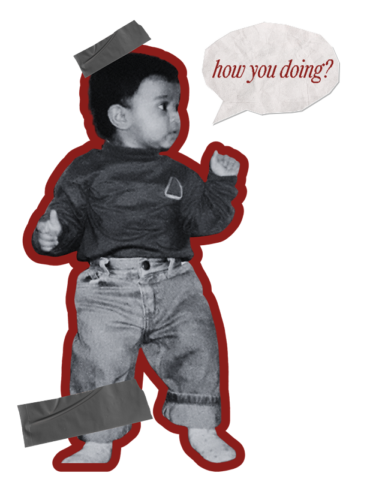

I’m a multidisciplinary designer who believes good design is part magic, part strategy, and a whole lot of storytelling. I turn ideas into visuals that make people stop, smile, and feel something.
Whether it’s branding, social media, or print, I love bringing concepts to life with color, clarity, and a sprinkle of chaos. This portfolio is where I share the things I’ve designed, the stories I’ve told, and the experiments that keep me inspired.
Take a look around. I hope something here sparks your imagination.
